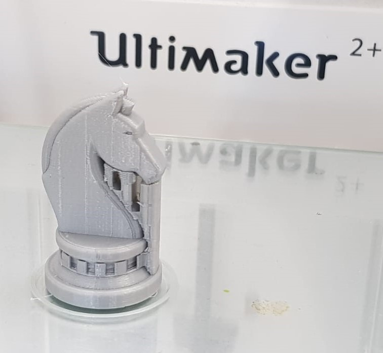

3D Printing
Chess Piece (Knight)
Computer Aided Design (CAD)
#1 Insert canvas, go to Insert > Canvas, adjust its size to fit the specified dimensions (Base: 30mm, Height: 50mm).
#2 Create sketch on the front plane, draw the cross section of the base according to the canvas. (Make sure that the profile is closed.)
#3 To Revolve, go to Create > Revolve, select the profile and axis, revolve 360 deg.
#4 Create another sketch on the front plane, draw the cross section of the horse, excluding the ears.
#5 Extrude the profile by 1mm, under Direction select Symmetric.
#6 Create sketch and draw out the ears.
#7 Extrude the drawn profile by 3mm, under Direction select One Side.
#8 Select the profile of the mane and extrude it out by 1.5mm.
#9 Create sketch and draw out to eyes.

#10 Use Mirror, go to Create > Mirror, to mirror the feature on the other side, select the features to be mirrored and the mirror plane.
#11 To use Fillet function, go to Modify > Fillet, click on edges to be rounded and select the radius.
#12 Add more fillets.
#13 To use Chamfer function, go to Modify > Chamfer, click on edges to be chamfered and select the distance.
#14 The Chess Piece is now complete and ready to be sliced.
Slicing
Go to Tools > Make > 3D Print, and select object to be printed, uncheck "Send to 3D Print Utility".
Select file type as .stl and save.
Launch the slicer software Ultimaker Cura, and open the stl file.
Select the printer and change the print settings. (Parameters can be found at the bottom of the page)
When done, click on the slice button to check the printing time, tweak the settings to adjust print time.
After slicing, click on "Preview" to preview. Save it as gcode.
Slicing Parameters
- Printer : Ultimaker 2+
- Material : PLA
- Nozzle : 0.4mm
- Layer Height : 0.2mm
- Wall Thickness : 0.8mm
- Wall Line Count : 2
- Top Layers : 3
- Bottom Laters : 3
- Infill Density : 15%
- Print Speed : 60 mm/s
- Enable Retaction : Selected
- Generate Support : Selected
- Support Placement : Everywhere
- Build Plate Adhesion Type : Skirt